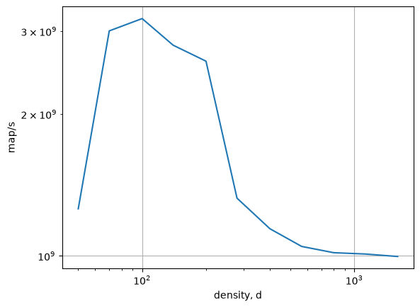
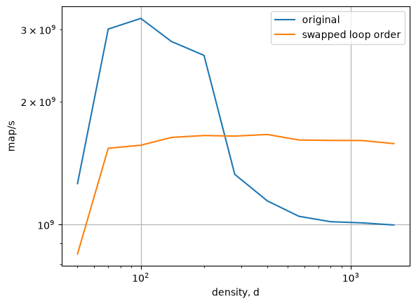
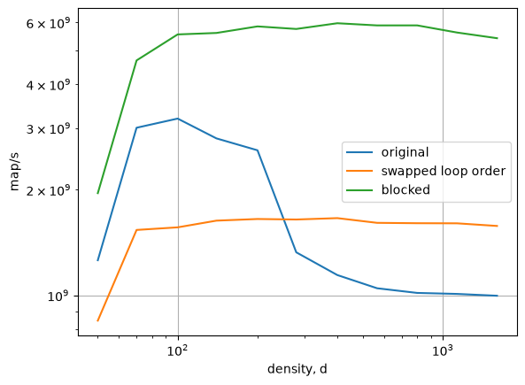
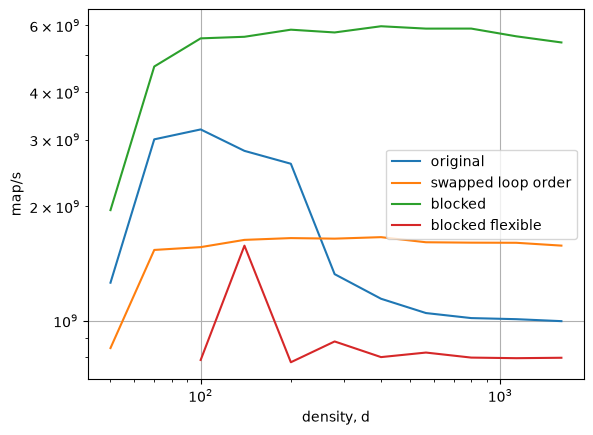

20260917 - Perf and Topdown Microarchitecture Analysis (Lab 3)¶
Bruteforce¶
From lab 3, we had the following bruteforce computation for the madelbrot set:
// iterate over map
for (long indf = 0; indf < args.max_iter; ++indf) {
// apply function to each grid point
for (long indA = 0; indA < numA; ++indA) {
for (long indB = 0; indB < numB; ++indB) {
long indAB = indA * numB + indB;
double scratch = MMAP_REAL(A[indAB], B[indAB], A_0[indA]);
B[indAB] = MMAP_IMAG(A[indAB], B[indAB], B_0[indB]);
A[indAB] = scratch;
}
}
}
We loop over function iterations, then over points.
[17]:
bruteforce_noswap = pd.read_csv("./bruteforce_serial_noswap.csv")
fig, ax = plt.subplots()
ax.plot(bruteforce_noswap['d'], bruteforce_noswap['map/s'])
ax.set_xscale('log')
ax.set_yscale('log')
ax.set_xlabel('density, d')
ax.set_ylabel('map/s')
ax.grid();

Theoretically, our arithmetic intensity should be incredibly high.
We do 1000 iterations for each point, each iteration is 7 FLOPs
This should be a theoretical FLOP/byte of
\[\frac{7000 FLOP}{16 byte} \approx 437\]But we’re still clearly in memory-bound computation
Why?
Loop ordering
Arithmetic intensity is not about the total bytes and total FLOPs
It is the FLOPs you execute while the data is in registers/L1 cache
By looping over iterations first, we’re actually moving the point data
mtimes.Thus, our actual arithmetic intensity is
\[\frac{7 FLOP}{16 byte} \approx 0.4375\]
If we change the loop order to have iterations inside:
// iterate over map
for (long indA = 0; indA < numA; ++indA) {
for (long indB = 0; indB < numB; ++indB) {
// apply function to each grid point
for (long indf = 0; indf < args.max_iter; ++indf) {
long indAB = indA * numB + indB;
double scratch = MMAP_REAL(A[indAB], B[indAB], A_0[indA]);
B[indAB] = MMAP_IMAG(A[indAB], B[indAB], B_0[indB]);
A[indAB] = scratch;
}
}
}
Now we get
[18]:
bruteforce_swap = pd.read_csv("./bruteforce_serial_swap.csv")
fig, ax = plt.subplots()
ax.plot(bruteforce_noswap['d'], bruteforce_noswap['map/s'], label='original')
ax.plot(bruteforce_swap['d'], bruteforce_swap['map/s'], label='swapped loop order')
ax.set_xscale('log')
ax.set_yscale('log')
ax.set_xlabel('density, d')
ax.set_ylabel('map/s')
ax.grid()
ax.legend();

The performance is (nearly) constant (excluding the smallest density
Thus, we are in the compute-bound regime now!
Our actual arithmetic intensity is the “real” 423 FLOPs/byte
Why is the original faster at smaller densities though?
How would we figure this out?¶
We can use perf to figure out what is happening, focusing on Top-down Microarchitecture Analysis (TMA)
TMA is a way of categorizing what is preventing the CPU from going faster
It puts the time the CPU is spending into a hierarchy of categories
Originally introduced in A Top-Down method for performance analysis and counters architecture
Here is the top-most level hierarchy:
Level |
Meaning |
|---|---|
Retiring |
This represents cycles spent on instructions that were successfully completed. This is the ideal case. |
Frontend Bound |
This represents stalls occurring because the CPU cannot fetch or decode instructions fast enough to keep the backend busy. |
Backend Bound |
This represents stalls occurring because the execution units are busy or waiting for data (e.g., memory latency or bandwidth issues). |
Bad Speculation |
This represents work wasted on instructions that were executed but eventually discarded due to branch mispredictions or other pipeline flushes. |

Blog: https://yukunj.github.io/blogs/tma
Using perf for TMA¶
Start by running the program with
perf stat <program>
For example:
$ perf stat ./mandelbrot_bruteforce_blocked -d 100 > /dev/null
[...]
Performance counter stats for './mandelbrot_bruteforce_blocked -d 100':
1 context-switches # 4.9 cs/sec cs_per_second
0 cpu-migrations # 0.0 migrations/sec migrations_per_second
382 page-faults # 1855.4 faults/sec page_faults_per_second
205.89 msec task-clock # nan CPUs CPUs_utilized
14,592 branch-misses # 0.0 % branch_miss_rate
104,569,656 branches # 507.9 M/sec branch_frequency
840,910,525 cpu-cycles # 4.1 GHz cycles_frequency
1,639,739,158 instructions # 1.9 instructions insn_per_cycle
TopdownL1 # 47.5 % tma_backend_bound
# 0.8 % tma_bad_speculation
# 8.6 % tma_frontend_bound
# 43.1 % tma_retiring
The # <number> % tma_* gives information about the time spent by the CPU in each category.
To drill further, we can run
perf stat -M tma_*_group <program>
where the * gets replaced by whatever specific group you want to know information about. This allows us to do deeper into the hierarchy.
If you want more information about a specific group or what it means, search for it in perf list -v.
Drilling down, we end up looking at port utilization
tma_ports_utilized_*indicates the percent of the time where the CPU cores were doing 0, 1, 2 or 3 \(\mu\)opsThe more \(\mu\)ops we do at once, the faster we perform our computations
Normal Bruteforce:
$ sudo perf stat -M tma_ports_utilization_group ./mandelbrot_bruteforce -d 100 > /dev/null
[....]
665,182,876 TOPDOWN.SLOTS # 0.2 % tma_ports_utilized_0
# 12.5 % tma_ports_utilized_1
# 18.6 % tma_ports_utilized_2 (88.73%)
81,736,062 UOPS_EXECUTED.CYCLES_GE_3 # 60.4 % tma_ports_utilized_3m (88.72%)
Swapped Bruteforce:
$ sudo perf stat -M tma_ports_utilization_group ./mandelbrot_bruteforce_swap -d 100 > /dev/null
[....]
1,173,759,662 TOPDOWN.SLOTS # 34.3 % tma_ports_utilized_0
# 43.3 % tma_ports_utilized_1
# 8.9 % tma_ports_utilized_2 (89.97%)
25,922,080 UOPS_EXECUTED.CYCLES_GE_3 # 11.0 % tma_ports_utilized_3m (89.99%)
Normal bruteforce gets better ILP!
By having the outer loop over iterations, each inner loop is completely independent!
Thus, the CPU can dispatch every instruction in that loop independently of the next
for (long indf = 0; indf < args.max_iter; ++indf) {
for (long indA = 0; indA < numA; ++indA) {
for (long indB = 0; indB < numB; ++indB) {
long indAB = indA * numB + indB;
double scratch = MMAP_REAL(A[indAB], B[indAB], A_0[indA]);
B[indAB] = MMAP_IMAG(A[indAB], B[indAB], B_0[indB]);
A[indAB] = scratch;
}
}
}
Blocked¶
What if we combined the two stratgies?
Ensure the inner-most loop has independent data
Ensure that computations are done while required data are located in cache
This is sometimes known as blocking.
We divide the data to be computed on into blocks
Then we operate on those blocks while the data is in cache
The easiest way for us to do that is simply put the iteration loop between our row loop and our column loop:
for (long indA = 0; indA < numA; ++indA) {
for (long indf = 0; indf < args.max_iter; ++indf) {
for (long indB = 0; indB < numB; ++indB) {
long indAB = indA * numB + indB;
double scratch = MMAP_REAL(A[indAB], B[indAB], A_0[indA]);
B[indAB] = MMAP_IMAG(A[indAB], B[indAB], B_0[indB]);
A[indAB] = scratch;
}
}
}
[19]:
bruteforce_blocked = pd.read_csv("./bruteforce_serial_blocked.csv")
fig, ax = plt.subplots()
ax.plot(bruteforce_noswap['d'], bruteforce_noswap['map/s'], label='original')
ax.plot(bruteforce_swap['d'], bruteforce_swap['map/s'], label='swapped loop order')
ax.plot(bruteforce_blocked['d'], bruteforce_blocked['map/s'], label='blocked')
ax.set_xscale('log')
ax.set_yscale('log')
ax.set_xlabel('density, d')
ax.set_ylabel('map/s')
ax.grid()
ax.legend();

We get the best of both worlds!
We get the best performance at small densities
We get the best performance at large densities
The performance is completely independent of the computation being done!
Different form of blocked¶
What if we wanted to block by some arbitrary amount rather than by rows?
For instance, maybe the size of each row exceeds L1 cache
Could we instead
#define BLOCK_SIZE 80000
// iterate over map
for (long block = 0; block < numA * numB / BLOCK_SIZE; ++block) {
long indAB_start = block * BLOCK_SIZE;
long indAB_stop = (block + 1) * BLOCK_SIZE;
if (indAB_stop > numA * numB)
indAB_stop = numA * numB;
for (long indf = 0; indf < max_iter; ++indf) {
for (long indAB = indAB_start; indAB < indAB_stop; ++indAB) {
long indA = indAB / numB;
long indB = indAB % numB;
double scratch = MMAP_REAL(A[indAB], B[indAB], A_0[indA]);
B[indAB] = MMAP_IMAG(A[indAB], B[indAB], B_0[indB]);
A[indAB] = scratch;
}
}
}
[21]:
bruteforce_blocked_flex = pd.read_csv("./bruteforce_serial_blocked_flex.csv")
fig, ax = plt.subplots()
ax.plot(bruteforce_noswap['d'], bruteforce_noswap['map/s'], label='original')
ax.plot(bruteforce_swap['d'], bruteforce_swap['map/s'], label='swapped loop order')
ax.plot(bruteforce_blocked['d'], bruteforce_blocked['map/s'], label='blocked')
ax.plot(bruteforce_blocked_flex['d'][2:], bruteforce_blocked_flex['map/s'][2:], label='blocked flexible')
ax.set_xscale('log')
ax.set_yscale('log')
ax.set_xlabel('density, d')
ax.set_ylabel('map/s')
ax.grid()
ax.legend();

Why are we getting so much lower?
Back to perf!
perf record¶
This allows us to get a much closer examination into exactly where in the code time is being taken. Two set process:
Record the execution of the event
Examine the resulting data
To record simply
perf record <program>
This outputs a perf.data file
Then, to examine, we use perf report.
This automatically looks for a
perf.datafile and reads that out
Annotate Assembly
Perf can tell use exactly which instructions spent the most time executing
Use
<Tab>and<Shift> + <Tab>to go between the longest running instructions
Jump instructions also annotated
Vector Instructions vs Scalar Instructions
*sdinstructions means “scalar double” instructions, indicating lack of vectorization.*pd“packed double” instructions, which are vectorized instructions
Vectorization fails¶
We see that the flexible version of blocked fails to vectorize the inner loop
Most time spent in
*sdinstructionsWhile the row-based blocking spends it’s time in the
*pdinstructions
Even with
#pragma omp simd, still don’t get vectorizationSome possible reasons (in order from most likely to least likely, in my opinion)
Can’t follow the memory access pattern (with the integer division and modulo operator)
Previously the
long indAB = indA * numB + indB;indexing was doneThis is a very common pattern (even if not done explicitly by the programmer), so the compiler can pick up on what the intention is
By comparison, doing the integer division/modulo is not very common and is a bit more obtuse
Integer division/modulo is slow, which means the compiler doesn’t see value in vectorization
Attempts and fails to vectorize the integer division and modulo operators